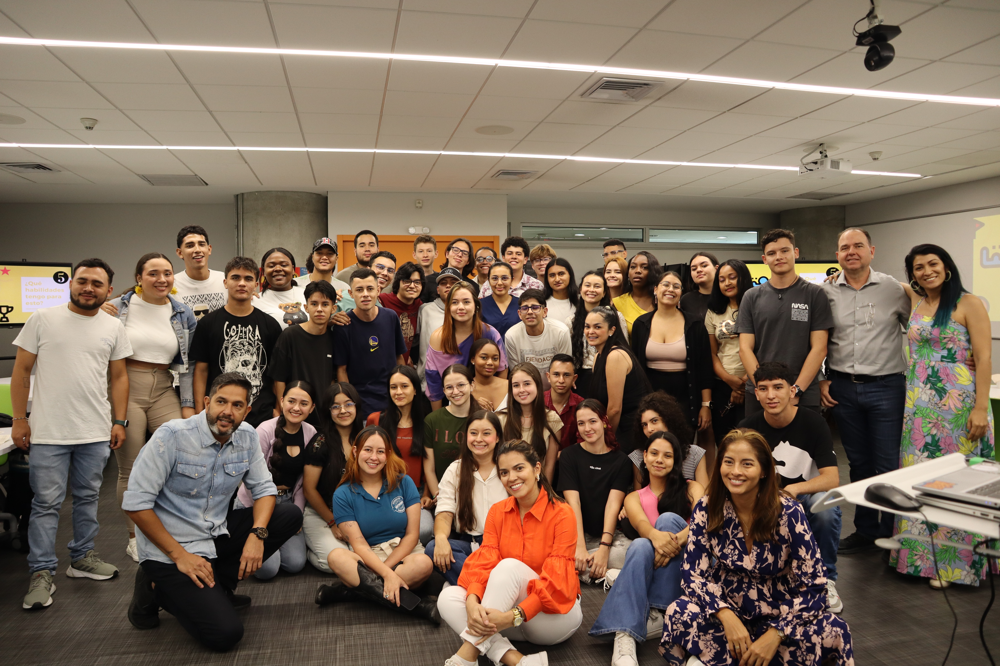
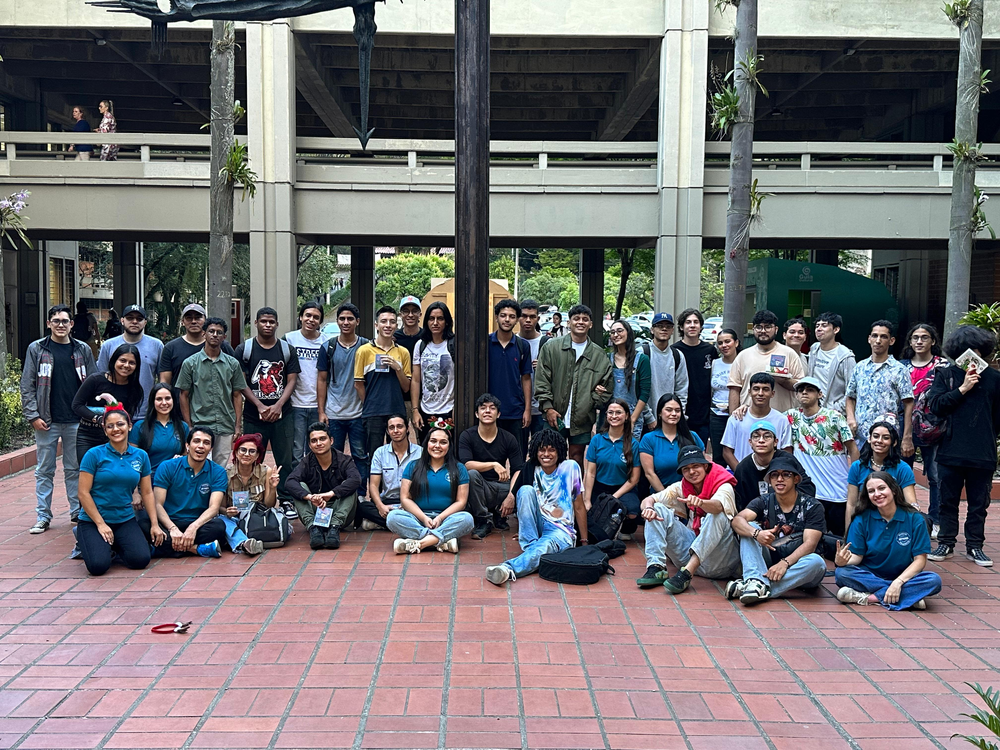

¿QUIÉNES SOMOS?
-*-SOMOS UNA ORGANIZACIÓN SIN ÁNIMO DE LUCRO QUE
Buscamos disminuir los niveles de deserción estudiantil en Colombia, mejorar los niveles de permanencia y de graduación, siendo esta nuestra manera de aportar al logro de un país con más educación y consecuentemente con más desarrollo.
NUESTROS FUNDADORES
Carlos Vásquez Restrepo
Paulina Tamayo Mejía
Víctor Manuel Valencia Martínez
Luis Fernando González Urán
Andrea Jaramillo Ramírez
Laura Calle Escobar
León Felipe Hernández López
Aida Orduz Quijano
NUESTRA JUNTA DIRECTIVA
Carlos Vásquez Restrepo - Presidente y Representante Legal Titular
Luís Fernando Sánchez Hurtado - Vicepresidente / Director y Primer Representante Legal Suplente
David Santiago Botero Rodríguez - Segundo Representante Legal Suplente / Coordinador Legal
Víctor Manuel Valencia Martínez - Subdirector / Tercer Representante Legal Suplente
Luis Fernando González Urán
NUESTRO REVISOR FISCAL
Orlando Gaviria Flórez
NUESTRA CONTADORA
María Verónica Ortiz Rodríguez

TEORÍA DEL CAMBIO
Identificar estudiantes con vulnerabilidades y acompañarlos integralmente, a través de un ecosistema de estrategias centrado en lo académico, económico y socioemocional para la permanencia.
MISIÓN
Aumentar las tasas de graduación de estudiantes de carreras y programas en áreas de tecnología, a través de estrategias de promoción de la permanencia y prevención de la deserción.
VISIÓN
En 5 años vamos a tener presencia a nivel nacional, en las 10 mejores universidades del país, donde habremos disminuido la tasa de deserción en 10 puntos porcentuales (del 50 al 40%). Además, vamos a estar replicando un modelo que es referente, cuyo éxito se puede medir cualitativa y cuantitativamente.
VALORES
En la Fundación Antivirus para la Deserción hacemos nuestro trabajo de forma colaborativa, con pasión, integridad, autonomía, empatía, compromiso y compañerismo. Somos solidarios e innovadores y tenemos una gran vocación de servicio.
PROPÓSITO
Construir un país próspero, pacífico, armonioso, tecnológico y competitivo, en el cual todos los jóvenes tienen acceso a la educación y son buenos seres humanos, con metas y empoderados de sus vidas. Gracias a esto, lograremos superar la pobreza y nos convertiremos en un referente de desarrollo.
PÚBLICO OBJETIVO
Trabajamos con estudiantes de carreras y programas TI de Educación Media y Postsecundaria. Enfocamos nuestra intervención en estudiantes vulnerables a la deserción.
PRIORIDADES
- Consolidar un modelo con procesos de identificación de vulnerabilidades, intervención e indicadores de resultados.
- Explorar modelos de intervención desde los colegios para aportar a reducir la deserción en educación superior.
- Conocer e involucrar a otros actores en el trabajo por la permanencia (Rectores, Decanos, MEN, Empresas, entre otros).
- Ayudar a reducir la deserción en otras universidades y programas para afinar nuestro modelo y generar ingresos que aporten a la sostenibilidad de la Fundación Antivirus.